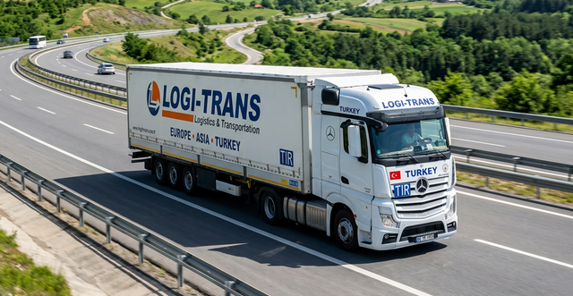
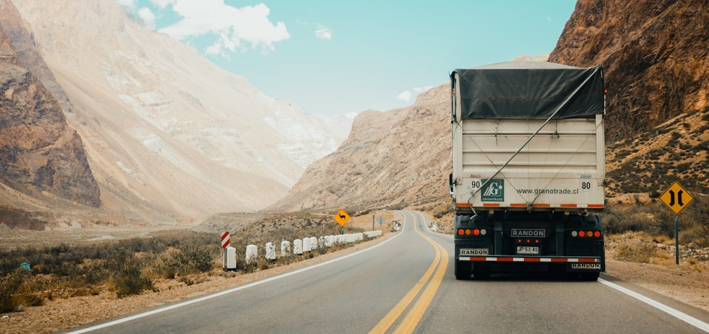

SRC 4 Belgesi Nedir?
SRC 4 belgesi, yurt içinde yük ve eşya taşıyan kamyonet, kamyon ve çekici sürücülerinin alması gereken Mesleki Yeterlilik Belgesidir. 4925 Sayılı Karayolu Taşıma Kanunu kapsamında zorunlu tutulan bu belge, Ankara dahil tüm Türkiye'de en fazla talep gören SRC türüdür.
SRC 4 yalnızca yurt içi taşımacılığı kapsar. Uluslararası taşımacılık da yapacaksanız SRC 3 almanız gerekir; SRC 3 belgesi SRC 4'ü de otomatik olarak kapsar ve iki ayrı belge almanıza gerek kalmaz.

Kimler SRC 4 Belgesi Almak Zorunda?
- Kamyonet ile yurt içinde ticari yük taşıyanlar
- Kamyon ve çekici sürücüleri (yurt içi hat)
- Kargo ve nakliye şirketlerinde araç kullanan şoförler
- Panelvan ve pikap ile ticari dağıtım yapanlar
- İnşaat malzemesi, mobilya ve benzeri yük taşıyanlar
- Taşımalı sistemlerde yük araçlarını kullananlar

Hangi Araçlar SRC 4 Kapsamında?
| Araç Türü | SRC 4 Gerekir mi? | Ehliyet Şartı |
|---|---|---|
| Kamyonet (ticari plaka) | ✅ Evet | B sınıfı yeterli |
| Panelvan (ticari) | ✅ Evet | B sınıfı yeterli |
| Kamyon (3,5 ton üzeri) | ✅ Evet | C sınıfı gerekir |
| Çekici (yurt içi) | ✅ Evet | CE sınıfı gerekir |
| Özel plakalı aile aracı | ❌ Hayır | — |
| Uluslararası TIR | Ü SRC 3 gerekir | CE sınıfı |
SRC 4 Belgesi Alma Şartları
- 19 yaşını doldurmuş olmak (66 yaşından küçük)
- En az ilkokul mezunu olmak
- Araç türüne uygun sürücü belgesine sahip olmak
- Geçerli psikoteknik raporu almış olmak
- MEB onaylı merkezde 36 saatlik SRC 4 eğitimini tamamlamak
- MEB SRC sınavında başarılı olmak
Gerekli Evraklar
- 2 adet biyometrik fotoğraf
- Nüfus cüzdanı fotokopisi
- Ehliyet fotokopisi
- Öğrenim belgesi fotokopisi (e-devletten alınabilir)
- Psikoteknik raporu (merkezimizde aynı gün alabilirsiniz)
Eğitim Süreci
SRC 4 eğitimi 36 saatlik teorik eğitimden oluşur. SRC türleri arasındaki en kısa programdır. Karayolu mevzuatı, yük güvenliği, taşıma belgeleri, araç tekniği, sürücü sağlığı ve trafik güvenliği konuları ele alınır.
Hafta içi veya hafta sonu program seçeneğiyle eğitim genellikle 5–7 günde tamamlanır. Eğitim sonrası MEB e-sınavına girilir; sınavı geçen sürücülere SRC 4 belgesi düzenlenir.
Kargo ve Nakliye Firmaları İçin
Ankara'daki kargo ve nakliye firmaları için toplu kayıt seçeneği sunulmaktadır. Birden fazla sürücünüzü aynı anda kayıt ettirmek veya eğitim takvimi planlamak için bizi arayın; özel program hazırlayabiliriz.